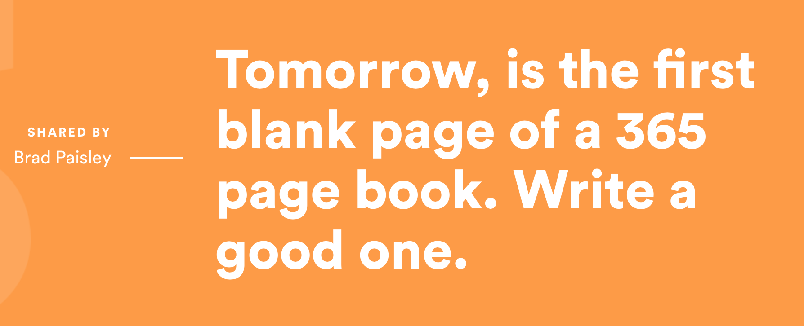

Building Scalable Components
Questions asked:
- Is my CSS good enough?
- Am I doing the right things?
- Am I using the best practices?
- Is my CSS clean and maintainable?
- Is it DRY?
- Is it scalable?
- What can I improve on? And how?
More questions asked:
- What I framework should I use?
- Should I use frameworks?
- Should I use methods like OOCSS, BEM, SMACSS, Atomic Design?
- Which should I use?
- …
How do you...
- Maintainable?
- Scalable?
- Clean?
Hello, I’m Zell
🇸🇬
Designer/developer
When I'm not desiging/coding…
- I teach FED. I help over 30,000 readers/month
- Through my blog and courses
- zellwk.com
Back to the topic
How do you...
- Maintainable?
- Scalable?
- Clean?
Let's call that proportional scaling
Let's call that responsive scaling
Let's call that modular scaling
1. Proportional Scaling
2. Responsive Scaling
3. Modular Scaling
Proportional Scaling
Relative units
emch%
button {
font-size: 1em;
padding: 0.5em 0.75em;
/* Other properties */
}/* Group common properties together */
.button {
display: inline-block;
padding: 0.5em 0.75em;
font-size: 1em;
}
.button-small {
font-size: 0.8em;
}
.button-large {
font-size: 2em;
}Using Sass mixins
@mixin button {
display: inline-block;
padding: 0.5em 0.75em;
/* Other common properties */
}
.button-large {
@include button;
font-size: 2em;
}Components scale according to:
- font-size
- viewport
Viewport units
vwvhvminvmax
.quarter-screen-rect {
width: 50vw;
height: 50vh;
}Quarter screen rectangle
Fluid typography
Fluid Typography with vw
html {
font-size: calc(16px + 0.5vw);
}
h2 {
font-size: 3em;
}For more, read fluid typography by Mike Riethmuller
Proportional Scaling:
- Scale to what property?
- Use relative units like
emandvw - Refrain from
px
Grab the freebie!
Lego blocks
Component title
The quick brown fox jumps over the lazy dog.
Removing the bottom margin
.component p:last-child { margin-bottom: 0 } Removing the bottom margin for everything
.module p:last-child,
.module ul:last-child,
.module ol:last-child,
.module dl:last-child {
/* losing battle */
margin-bottom: 0;
}From this article on CSS-Tricks
The adjacent sibling selector (+)
Single component
Component
Multiple components
Component
Component
Component
Component
Lobotomized owl selector
* + * {
margin-top: 1rem;
}
.component > * + * {
margin-top: 1rem;
}Read lobotomized owl by Heydon Pickering
Managing internal whitespace
.button {
margin-top: 1em;
margin-bottom: 1em;
/* Other properties */
}.button {
font-size: 1em;
margin-top: 1em;
margin-bottom: 1em;
/* Other properties */
}.button-large {
font-size: 2em;
margin-top: 0.5em;
margin-bottom: 0.5em;
/* Other properties */
}Rem to the rescue!
.button-large {
font-size: 2em;
margin-top: 1rem;
margin-bottom: 1rem;
/* Other properties */
}Em === local variable
Rem === global variable
Local variable === good ?
Global variable === bad ?
Local variable === good ?
Global variable === bad ?
Lego blocks
- Components should not disturb surrounding whitespace
- Components should control internal whitespace
- Use (
+) - Use local and global variables (
emandrem)
Responsive Scaling
Media queries
Media queries
min-widthqueriesmax-widthqueries
min-width media queries
// Note: Always write media queries in `em`.
.component {
@media (min-width: 37.5em) {
font-size: 2em;
}
}max-width media queries
.component {
font-size: 2em;
@media (max-width: 37.5em) {
font-size: 1em;
}
}Combining min-width and max-width
Small viewport

Medium viewport
Large viewport
Media query demo
Responsive Scaling:
- media queries
- favor
min-widthovermax-width - use both when you need to!
Modular Scaling
Morphable components

Grid view
Single view
Grid view
Single view
Quote
Grid view
Single view
Author
Grid view
Single view
Date
Dec 31 2016
…
…
.quote {
/* Shared styles */
} .single-view .quote {
/* Single styles */
}
.single-view .quote .date {
display: none;
} .grid-view .quote {
/* Grid styles */
}
…
…
.quote {
/* shared styles */
}.quote--single {
/* single styles */
}
.quote--single .quote__date {
display: none;
}.quote--grid {
/* grid here */
}Founder Mantras demo
Morphable components may not be obvious
All three of them have:
- 1 image
- Title
- Background color
- Hover effect
- Platform indicator
Two of them have:
- Price tag
- Discount tag
- Platform indicator
Their differences:
- Layout
- Comments
- Description
- Genre
- List Counter
Can you figure it out?
Morphable blocks
- Find similarities and differences between views
- Craft your best-fit HTML
- Modify looks with CSS
- Minimize the number of modifiers
Additional tips
Additional tips
- Naming components
.quote {
/* shared styles */
}.quote--single {
/* single styles */
}
.quote--single .quote__date {
display: none;
}.quote--grid {
/* grid here */
}BEM Modifier
BEM Element
Additional tips
- Naming components
- Namespacing
- Elements:
e- - Components:
c-
- Layouts:
l-(.l-article) - State:
is-,has-(.is-active) - JavaScript:
js(.jsModalToggle)
Additional tips
- Naming components
- Namespacing
- Manage specificity
Closing
Thank you!
Blog: https://zellwk.com
Twitter: @zellwk